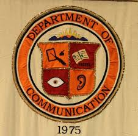

Welcome to Chris's Website
My name is Chris Clements and I am a second year graduate student. My research interests are in sports media and communication.
I enjoy traveling to new cities to attend NFL football and MLB baseball games. The excitement of cheering for the Philadelphia Eagles on a cold December afternoon with the smell of authentic Philly cheesesteaks in the air really gets my competitive juices flowing. As exciting to me, is the sight of Fenway Park's Green Monster at sunset on a warm Boston evening as I am eating my cracker jacks and listening to "Sweet Caroline" over the loud speaker during the seventh inning stretch of a Red Sox home stand. But does anything compare to watching the Hokies run out of the tunnel onto Lane Stadium with 66,000 fans jumping to "Enter Sandman"
My thesis is researching how the media portrays college quarterbacks as they are entering the NFL draft.
Feel free to travel around this website to explore more information on my favorite sports teams.